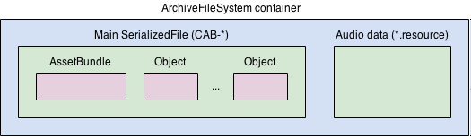

When you use BuildPipeline.BuildAssetBundles to build AssetBundles, Unity writes the following files to a specified output directory:
Note: If you use the Addressables package to build AssetBundles, it produces an AssetBundle file but no manifest files or manifest bundles.
The Unity archive file format is a generic packaging format that can store any type of file, similar to a .zip file. Archive files are mounted into Unity’s virtual file system (VFS), which allows them to be accessed in a uniform way across different platforms.
Unity uses the archive format for AssetBundles, where archive files are created as a final stage of the AssetBundle build process. They are mounted into the Unity virtual file system when the AssetBundle is loaded. The archive format is also used for Players built with LZ4 compressionA method of storing data that reduces the amount of storage space it requires. See Texture Compression, Animation Compression, Audio Compression, Build Compression.
See in Glossary, in which case the archive is mounted automatically when the Player runs.
Usually you don’t need to interact with archives at a low level. However, Unity provides the API ArchiveFileInterface to manage archive files directly with low-level APIs as needed.
The AssetBundle file is an archive file that contains multiple files which loads in assets at runtime. The following diagram contains an example of an AssetBundle file layout:

ArchiveFileSystem archive file contains two files:
AssetBundle object and the objects from all the assets included in the AssetBundle..resource extension.The way Unity organizes the content inside an AssetBundle is called the build layout. The build layout depends on whether the AssetBundle contains assets or scenesA Scene contains the environments and menus of your game. Think of each unique Scene file as a unique level. In each Scene, you place your environments, obstacles, and decorations, essentially designing and building your game in pieces. More info
See in Glossary:
PlayerBuild-SceneFileName. This corresponds to the level0 files in a Player build. Unity stores assets referenced from a scene file in a sharedasset file, for example PlayerBuild-SceneFileName.sharedasset, unless another AssetBundle exposes the referenced asset. Because the sharedasset calculation only covers scenes that are in the same AssetBundle, if scenes are stored in individual AssetBundles rather than storing them together in a single AssetBundle, then Unity might create a significant amount of duplicated objects. However, there can be performance and distribution advantages to storing scenes in separate AssetBundles.The naming convention for the serialized file inside an archive is as follows:
CAB-, followed by the MD4 hash of the AssetBundle name. For example, CAB-cc6c60ef8808e0fc6663136604321554.BuildPipeline.BuildAssetBundles use a name that begins with PlayerBuild- followed by the scene’s file name (without path and extension). For example, Assets/Scene1.unity becomes PlayerBuild-Scene1. Because of this convention give each scene file a unique file name to avoid conflicts.CAB-, followed by the MD4 hash of the project relative path of the scene. The accompanying sharedasset file has the same file name, followed by the .sharedasset extension.As with Player builds, each serialized file inside an AssetBundle can be accompanied by a .resS and a .resource file to store large binary data. All audio or video is stored in .resource files, and textures and meshes are stored in the .resS format. These files are named after the serialized file they accompany, for example CAB-cc6c60ef8808e0fc6663136604321554.resource or PlayerBuild-Scene1.sharedasset.resS.
The Unity Editor installation includes the WebExtract and Binary2Text executables which you can use to extract the files nested inside the AssetBundle and produce a text format dump of the contents of a binary SerializedFile. Its output is similar to the YAML format used by Unity.
For more information about these tools, refer to Analyzing AssetBundles.
For every AssetBundle generated, Unity generates an associated manifest file. The manifest file has the extension .manifest and you can open it with any text editor.
It includes the following content:
BuildPipeline.GetHashForAssetBundle.BuildPipeline.GetCRCForAssetBundle.SerializeReference types. For more information, refer to BuildPlayerOptions.assetBundleManifestPath.The following is an example of the contents of an AssetBundle manifest file:
ManifestFileVersion: 0
UnityVersion: 6000.2.0a6
CRC: 4208470199
Compression: None
Hashes:
AssetFileHash:
serializedVersion: 2
Hash: 81197c4674c1f389b3568a0aa1b41119
TypeTreeHash:
serializedVersion: 2
Hash: 3c2131fb3360d17991621f547033218e
IncrementalBuildHash:
serializedVersion: 2
Hash: 489e266cfc1b361a94c3efc39afecb54
HashAppended: 0
ClassTypes:
- Class: 1
Script: {instanceID: 0}
- Class: 4
Script: {instanceID: 0}
SerializeReferenceClassIdentifiers: []
Assets:
- Assets/Scenes/Scene2.unity
- Assets/Scenes/SampleScene.unity
Dependencies:
- C:/MyBuild/audio.bundle
- C:/MyBuild/sprites.bundle
Unity uses the .manifest files for its incremental build pipeline. When performing a build, Unity checks the existing AssetBundles and .manifest files to determine if the AssetBundle needs to be rebuilt or can be reused. If you delete the .manifest files then Unity always rebuilds the AssetBundles from scratch.
Manifest files aren’t required to load the AssetBundles, so you don’t need to distribute them. If BuildAssetBundleOptions.AppendHashToAssetBundleName is used, the hash is appended to the AssetBundle file name, but this hash isn’t included in the .manifest file name.
In addition to the .manifest file for each AssetBundle, Unity generates a root .manifest, named after the build folder itself (for example, MyBuildFolder.manifest). This file lists the generated AssetBundles and their dependencies, with paths relative to the build directory. It also contains the CRC of the manifest AssetBundle. This root manifest is crucial for code stripping during Player builds, because its path can be passed to BuildPipeline.BuildPlayer to prevent script types and Unity modules required by AssetBundles from being stripped.
The following is an example of a root manifest file:
ManifestFileVersion: 0
CRC: 2309754985
AssetBundleManifest:
AssetBundleInfos:
Info_0:
Name: bundle_prefab
Dependencies:
Dependency_0: bundle_sobject
Info_1:
Name: bundle_sobject
Dependencies: {}
Unity additionally generates a manifest bundle, which is an AssetBundle file named after the directory it’s located in. It contains the AssetBundleManifest object which Unity uses to determine which bundle dependencies to load at runtime.
There are two additional files generated by the build.
The first is a small AssetBundle that is named after the directory that it’s located in (where the AssetBundles were built to). This file is called the Manifest Bundle and it contains the AssetBundleManifest object which will be useful for figuring out which bundle dependencies to load at runtime. For information on how to use this bundle, refer to Loading assets from bundles.
The manifest bundle also includes its own .manifest file. The following is an example of a manifest bundle’s manifest file:
ManifestFileVersion: 0
AssetBundleManifest:
AssetBundleInfos:
Info_0:
Name: scene1assetbundle
Dependencies: {}
The .manifest file for the manifest bundle records how AssetBundles relate, and what their dependencies are. This information is similar to the information recorded by the AssetBundleManifest object inside the manifest bundle.
The manifest file is important to prevent code stripping for unused types that you use in your AssetBundle. If you have enabled code stripping in your project, set BuildPlayerOptions.assetBundleManifestPath to pass the path to this manifest when performing player builds.
AssetBundle builds additionally generate a BuildReport file which is a Unity SerializedFile written to Library/LastBuild.buildreport inside the project directory. This file is useful to view a summary of the timings for build steps and a detailed view of the contents of the AssetBundle. You can use the BuildReport API to read information from the BuildReport file.
You can also use the following tools to view the content of the BuildReport file: